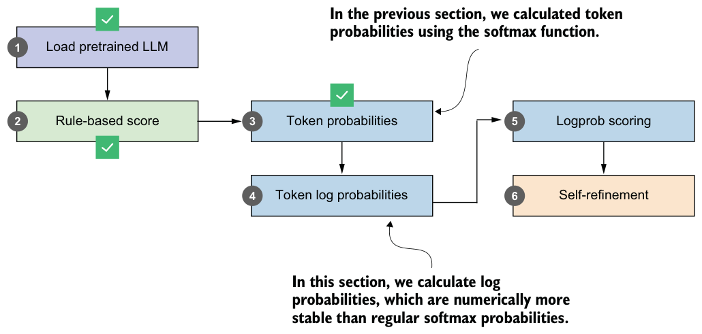
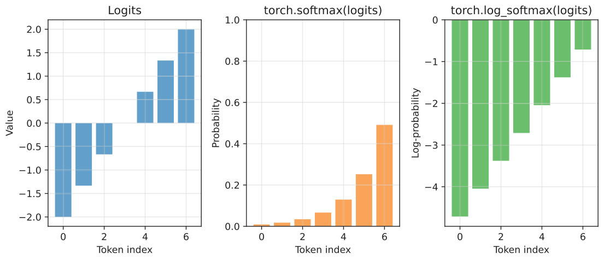
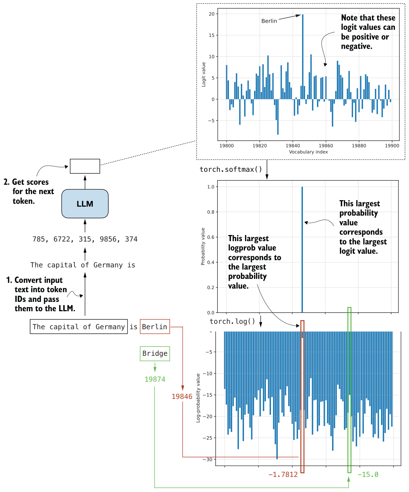
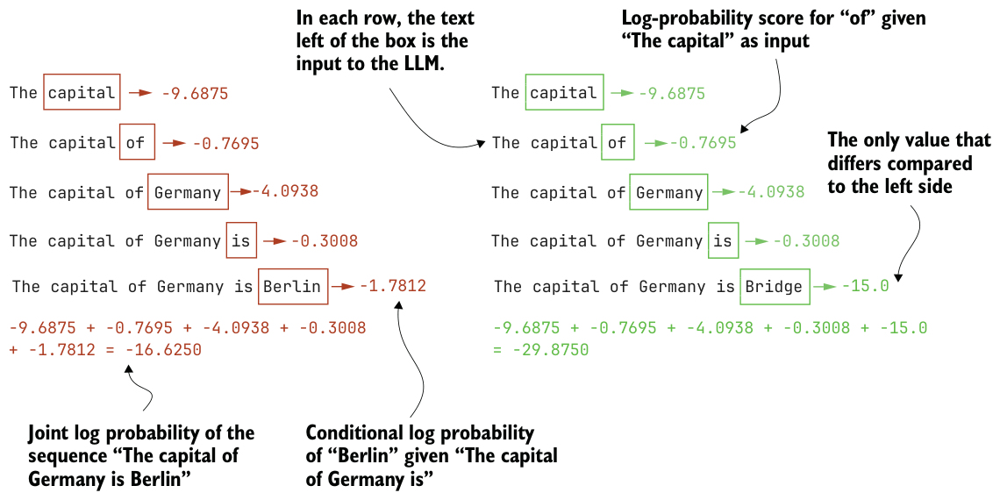

Probabilities vs. likelihoods
next_token_probas are probabilities, not torch.prod(next_token_probas)), is the model-assigned probability of the sequence. This quantity is often referred to as the sequence likelihood (especially when viewed as a function of the model parameters).5.5From token probability scores to log probabilities
The token probabilities computed in the previous section can be used as a scoring function to rank different responses. As we saw, the probability scores can be very small, especially when multiplied to obtain the joint probability or sequence likelihood.
In this section, to avoid the numerical stability issues that often arise when working with such small values, we’ll apply logarithmic scaling (also called log scaling) to these probabilities, as shown in the overview in figure 5.13.

Consider this simple example of computing probabilities for a selection of logit values:
torch.set_printoptions(precision=4, sci_mode=False)
logits = torch.linspace(-2, 2, steps=7)
probas = torch.softmax(logits, dim=-1)
print(probas)The probability values are as follows:
tensor([0.0090, 0.0175, 0.0341, 0.0665, 0.1295, 0.2522, 0.4912])We can turn them into log-probability scores via the torch.log function:
print(torch.log(probas))These are the log-probability values:
tensor([-4.7109, -4.0442, -3.3776, -2.7109, -2.0442, -1.3776, -0.7109])Here, torch.log applies the natural logarithm, where 𝑙𝑜𝑔(0.0090) = –4.7109, and vice versa, 𝑒–4.7109 = 0.0090.
Instead of chaining torch.log(torch.softmax(...)), PyTorch also has an optimized torch.log_softmax function that combines these two operations:
log_probas = torch.log_softmax(logits, dim=-1)
print(log_probas)Similar to before, this returns the following:
tensor([-4.7109, -4.0442, -3.3776, -2.7109, -2.0442, -1.3776, -0.7109])Note that log scaling changes only the magnitude of the values, not their ordering, so a sequence with a higher likelihood will always have a higher log likelihood as well. To see this visually, let’s plot the logits, probabilities, and log probabilities side by side.
plt.figure(figsize=(9, 4))
plt.subplot(1, 3, 1)
plt.bar(range(len(logits)), logits, color="C0", alpha=0.7)
plt.title("Logits")
plt.xlabel("Token index")
plt.ylabel("Value")
plt.grid(alpha=0.3)
plt.subplot(1, 3, 2)
plt.bar(range(len(probas)), probas, color="C1", alpha=0.7)
plt.title("torch.softmax(logits)")
plt.xlabel("Token index")
plt.ylabel("Probability")plt.ylim(0, 1)plt.grid(alpha=0.3)plt.subplot(1, 3, 3)
plt.bar(range(len(log_probas)), log_probas, color="C2", alpha=0.7)
plt.title("torch.log_softmax(logits)")
plt.xlabel("Token index")
plt.ylabel("Log-probability")
plt.grid(alpha=0.3)
plt.tight_layout()
plt.savefig("logits_softmax_log_softmax.pdf")
plt.show()The resulting plot is shown in figure 5.14. As you can see, the log probabilities have the same order as the logits and probability values. A larger logit corresponds to a larger probability and a less negative log probability. Smaller logits, in turn, produce smaller probabilities and more negative log probabilities.

In practical terms, higher probabilities are better because they indicate the model assigns more confidence to a token. For log probabilities, values closer to zero are better, since zero corresponds to a probability of one, while very negative values correspond to extremely small probabilities. This makes it easy to compare tokens: the least negative log probability is the most likely one, and the most negative log probability is the least likely.
While figure 5.14 illustrates the relationship between logits, probabilities, and log probabilities for a simple example, we can apply it to the probability values from the earlier "The capital of Germany is" prompt, as shown in figure 5.15.

We use probabilities instead of logits because probabilities are normalized and easier to interpret as confidence values. Earlier, we also noted that log probabilities offer an additional benefit, since they allow more numerically stable calculations than working with raw probabilities.
The numerical stability comes from the fact that even very small probability scores map to log probabilities in a reasonable numeric range. Another reason is that multiplying many probabilities quickly drives the result toward zero, while taking the log turns this multiplication into addition, which avoids underflow and is much more stable for long sequences.
Figure 5.16 shows how the joint log probability (or sequence log likelihood) is computed for the two example texts we used earlier. When we computed the regular joint probability score, we saw that both sequences had values close to zero. Now, with the joint log probability, we can see that even changing just the final token (for example, "Berlin" versus "Bridge") results in a noticeably different total log probability
(-16.6250 versus -29.8750).